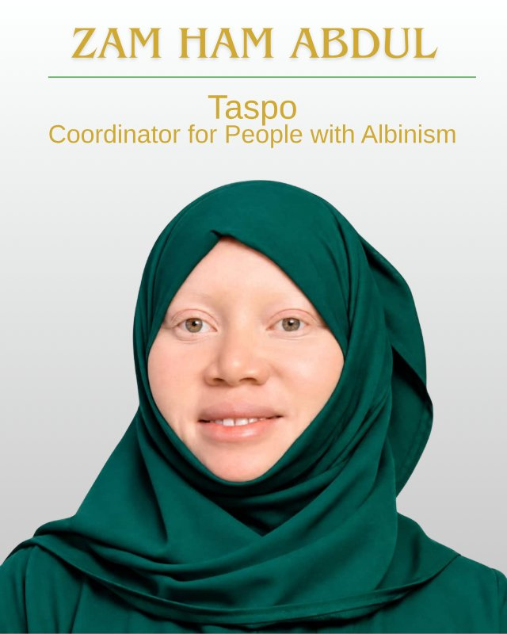

Tanzania Student Plan Organization (TASPO) is on a mission to close the technology gap in Tanzanian schools — from primary level through university. Too many students still learn without access to the digital tools shaping the modern world, and TASPO exists to change that: bringing modern teaching methods, technology and life-skills training into classrooms across the country.
Tanzania Student Plan Organization (TASPO) is a registered non-governmental organisation based in Singida, Tanzania, working to change what learning looks like for students across the country. We were founded in response to a simple but urgent problem: too many schools, from primary level right through to university, are still teaching without the technology that today's world runs on. That gap holds students back before they've even had a chance to catch up.
TASPO exists to close it. We're a locally rooted, community-driven organisation, and everything we do is guided by Tanzania's national ICT Education Policy (2010), which recognises technology as one of the most powerful tools we have for improving how students learn and how teachers teach.
Our work is built around one central idea: better tools and better skills lead to better futures.
We work alongside government efforts to modernise education infrastructure, helping schools move away from outdated teaching methods — including reducing reliance on chalk — and towards tools like whiteboards and digital resources that support healthier, more effective learning environments for both students and teachers.
Through school clubs and structured programmes, we help students develop practical, physical and economic life skills — the kind that prepare them for life beyond the classroom, not just for exams.
We run awareness programmes on violence and abuse in schools, helping students understand their rights and building safer environments for the most vulnerable, including girls and younger children.
We believe change in education starts with equipping educators, so a large part of our work focuses on training and resourcing teachers to use modern methods confidently.

Walk into most rural classrooms in Tanzania and you'll find the same set-up that's been there for generations: a blackboard, a box of chalk, and rows of children breathing in a fine white haze every single lesson.
It looks harmless. It isn't.
Every time a teacher writes on a blackboard — and every time the board gets wiped clean — chalk releases a cloud of fine dust into the air. In a small, poorly ventilated classroom with forty or fifty children packed in for six hours a day, that dust doesn't just disappear. It settles on desks, on books, on skin — and it gets breathed in, lesson after lesson, year after year.
Researchers who've studied this have found that:
None of this is dramatic on any single day. That's exactly the problem — it's a slow, invisible harm that builds up over years of schooling, in classrooms where nobody thought to question it because it's simply “how school has always been.”
The good news is that the fix isn't complicated, expensive research or new technology. It's a whiteboard.
Studies comparing the two are clear: classrooms using whiteboards and dry-erase markers show none of the dust spikes that chalk and blackboards produce. Same lesson, same teacher, same children — just cleaner air.
That's why we started Whiteboards for All — a straightforward, practical project to replace blackboards and chalk with whiteboards in Tanzanian schools, one classroom at a time.
We believe education should build children up, not quietly wear down their health while it does. A blackboard was never a deliberate choice to put children at risk — it's simply what was available, for a long time. Now something better is available too, and we think every classroom deserves it.
Every whiteboard we install replaces years of daily dust exposure with something as simple as a wipe-clean surface and a dry marker. It's a small change on paper. In a classroom full of children, it's the air they'll breathe for the rest of their school life.
Help us bring clean air — and a proper whiteboard — to more Tanzanian classrooms.
TASPO is member-led and fully accountable to the communities we serve. Our General Meeting — made up of all our members — is our supreme decision-making body, setting our budgets, approving our plans and holding our leadership to account.
A Board of Directors and elected office bearers (Chairperson, Executive Secretary and Treasurer) manage our day-to-day work, and every shilling we raise, whether through membership fees, fundraising, grants or donations, goes directly towards our educational mission. Nothing more, nothing less.
We're working towards a Tanzania where no student's education is limited by a lack of technology or resources — where every classroom, from the smallest village primary school to university lecture halls, has the tools and support needed to help students genuinely thrive. We want to see a generation of Tanzanian students who are not only academically capable, but digitally confident, equipped with real-world life skills, and safe in the environments where they learn.
This is a long-term mission, and we can't achieve it on our own.
Shilekirwamuu Israel Mwasha, born on 1st May 1992 in South Wales, England, United Kingdom, is the founder of the Tanzania Students Plan Organisation (TASPO).
His journey toward establishing TASPO was shaped by his educational experiences, personal observations, studies, and a growing conviction that students should be prepared not only to pass examinations, but also to understand, plan for, and actively participate in real life.
One of the most important influences in the development of his vision came during his time at Mwandege Boys Secondary School in Mkuranga. At the school, students experienced an environment that encouraged them to manage and utilize their time responsibly, without depending entirely on school bells. This experience taught him an important lesson: education is not merely about the A's or B's we receive, but about the application of knowledge in the real world.
Through his studies, experiences at school, and observations of society, he continued to develop the idea that students needed an organized platform through which they could learn to plan, organize, cooperate, and prepare themselves for the future.
After reflecting on everything he had learned from school, his studies, and the observations he had made throughout his educational journey, on 1st November 2007, while he was at Mwandege Boys Secondary School, Shilekirwamuu Israel Mwasha made a significant decision: he would write down his vision and tasks for what he believed could become a students' organization.
This was a defining moment in the history of TASPO.
The idea was no longer simply an observation or a personal thought. He began putting the vision into writing by developing what he referred to as the TASPO Taskbook — a written foundation for the tasks, responsibilities, objectives, and direction of the organization he envisioned.
The date 1st November 2007 therefore represents an important milestone: the day the TASPO vision was formally put into written form.
His inspiration was strengthened by the ideas and quotations he encountered in The Map of Life, which encouraged him to think about life beyond the classroom and the importance of planning one's journey.
Another important part of his vision was inspired by his experience at Mwandege Boys and by observing his father, Israel Mwasha, teaching with a whiteboard.
These experiences helped him recognize that simple improvements in educational environments could have a meaningful impact on students and teachers. This later contributed to the development of TASPO's interest in promoting whiteboards as an alternative to traditional chalkboards, as part of a broader effort to improve learning environments.
The founder sincerely acknowledges Mr. Enock Walter, Chief Facilitator of Mwandege Boys Secondary School, whose leadership and educational environment played an important role in shaping the experiences that contributed to the original TASPO vision.
From the lessons learned at school, to observations of society, to the decision made on 1st November 2007 to begin writing the TASPO Taskbook, the journey reflects a central belief:
Students are not simply recipients of education. They are planners, innovators, problem-solvers, and future leaders who can participate in creating a better society.
This belief remains at the heart of the Tanzania Students Plan Organisation (TASPO).


Kristian Muro serves as TASPO's Secretary General, helping guide the organisation's day-to-day work alongside the Board of Directors and fellow office bearers — working to bring TASPO's mission of technology access, teacher training and life-skills education to classrooms across Tanzania.
Vicky is an investigative journalist and former BBC bureau chief with extensive experience in evidence based reporting, public advocacy, and protection of vulnerable communities. Through her work with SMOTA, an organisation that promotes the rights of mothers of persons with albinism, she regularly engages with children with albinism and supports efforts to meet their educational and health needs.
Although retired from her role as Executive Director of Under The Same Sun (UTSS), she continues to provide occasional consultancy on issues relating to disability inclusion, child protection, and safe learning environments. Her professional background includes extensive collaboration with schools that accommodate students and teachers with albinism, particularly in strengthening classroom accessibility for low vision learners.
Vicky brings to TASPO a commitment to factual, evidence based advocacy and practical solutions that enhance the wellbeing of both students and teachers.


Zam Ham Abdul is a dedicated member and coordinator of the Tanzania Students Plan Organisation (TASPO), serving in a special role focused on strengthening TASPO's connection with people with albinism and ensuring that their voices, experiences, and needs are recognized within student and community development initiatives.
Zam Ham Abdul is regarded as a committed, compassionate, and dependable personnel who understands the importance of inclusion and equal opportunity. Through the coordination role, Zam Ham Abdul helps create a bridge between TASPO and people with albinism, encouraging communication, participation, advocacy, and cooperation.
The role is particularly important because people with albinism may experience challenges related to vision, sensitivity to light and ultraviolet radiation, skin protection, discrimination, and social misconceptions. Organizations working with people with albinism therefore place importance on awareness, education, health protection, inclusion, and human rights.
Within TASPO, Zam Ham Abdul's responsibility is to help ensure that people with albinism are not left behind in programs involving education, student participation, research, empowerment, leadership, and community development.
One of Zam Ham Abdul's greatest contributions is the ability to serve as a link between TASPO and the albinism community. Through this position, Zam Ham Abdul can help TASPO understand challenges affecting people with albinism directly from their experiences and support the development of programs that respond to those realities.
The position reflects TASPO's broader commitment to ensuring that students and young people from different backgrounds have opportunities to participate, contribute, and be heard.
Zam Ham Abdul's work is built around the principle that every person deserves dignity, respect, protection, education, and equal opportunity. This approach is consistent with wider advocacy work in Tanzania, where organizations supporting people with albinism emphasize protection, education, health awareness, empowerment, and the fight against discrimination.
As TASPO continues developing its programs and expanding its engagement with students and communities, Zam Ham Abdul's role provides an important connection to people with albinism.
Through coordination, communication, advocacy, and community engagement, Zam Ham Abdul contributes to building a TASPO that recognizes diversity and seeks to ensure that no student or community member is excluded because of albinism or disability.
Inclusion is not simply about giving people a place at the table; it is about making sure their voices are heard and their presence makes a difference.
Eliashishi Israel Mwasha is a dedicated Tanzanian education and field-research professional with a strong passion for working with students, schools, and communities.
She pursued her studies at St. Augustine University of Tanzania (SAUT), Mwanza, where she gained academic knowledge and practical skills that have contributed to her professional development.
Eliashishi has worked extensively as a Task Force Field Officer, a role that has taken her to different schools and communities. Through this work, she has been actively involved in visiting schools, engaging with students, identifying challenges affecting students and education, and conducting various Task Force researches and field studies.
Her work is particularly focused on understanding students' experiences and helping identify practical solutions to challenges within educational environments. By working directly with students and schools, she has gained valuable field experience and a deeper understanding of the needs, opportunities, and challenges facing young people.
As a field officer, Eliashishi has demonstrated commitment, teamwork, research ability, communication skills, and a willingness to work directly with people at the grassroots level. Her experience in schools has also enabled her to build meaningful relationships with students and other stakeholders in education.
Eliashishi Israel Mwasha is also associated with the work of Tanzania Students Plan Organisation (TASPO), where her field experience and understanding of students' issues can contribute significantly to the organisation's mission.
Through her continued involvement in school visits, student engagement, research, and field activities, she represents the importance of listening to students and using research to understand and address their real needs.

Every partnership, grant and donation helps us reach another classroom, train another teacher, and give another student the tools they need to succeed. If you believe in the power of education to change lives, we'd love to work with you.
Partner with TASPO today